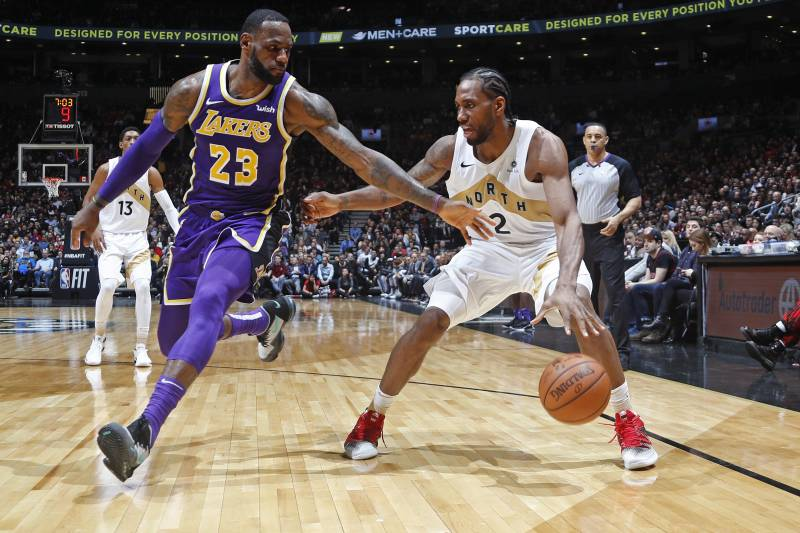

Profile Intro
LeBron Raymone James Sr. (/ləˈbrɒn/; born December 30, 1984) is an American professional basketball player for the Los Angeles Lakers of the National Basketball Association (NBA). He is often considered the best basketball player in the world and regarded by some as the greatest player of all time.His accomplishments include three NBA championships, four NBA Most Valuable Player Awards, three NBA Finals MVP Awards, and two Olympic gold medals. James has appeared in fifteen NBA All-Star Games and been named NBA All-Star MVP three times. He won the 2008 NBA scoring title, is the all-time NBA playoffs scoring leader, and is fourth in all-time career points scored. He has been voted onto the All-NBA First Team twelve times and the All-Defensive First Team five times. James played basketball for St. Vincent–St. Mary High School in his hometown of Akron, Ohio, where he was heavily touted by the national media as a future NBA superstar. A prep-to-pro, he joined the Cleveland Cavaliers in 2003 as the first overall draft pick.

Named the 2003–04 NBA Rookie of the Year, he soon established himself as one of the league's premier players; he won the NBA Most Valuable Player Award in 2009 and 2010. After failing to win a championship with Cleveland, James left in 2010 to sign as a free agent with the Miami Heat. This move was announced in an ESPN special titled The Decision, and is one of the most controversial free agent decisions in American sports history. James won his first two NBA championships while playing for the Miami Heat in 2012 and 2013.
Offense
As an 18-year-old rookie, James led the Cavaliers in scoring. He holds numerous "youngest to" distinctions,including being the youngest player to score 30,000 career points. During his first stint in Cleveland, he was used primarily as an on-ball point forward, and although his shooting tendencies were perimeter-oriented, he established himself as one of the best slashers and finishers in basketball.His combination of speed, quickness, and size often created matchup problems for opposing teams because he was capable of blowing by larger defenders and overpowering smaller ones.These qualities became more apparent in transition, where he developed a reputation for grabbing defensive rebounds and then beating the defense downcourt for highlight reel baskets.Around this time, James was frequently criticized for not having a reliable jump shot or post game.James's playmaking ability is generally considered one of his premier skills; some analysts rank him among the greatest passers in NBA history.
Defense
At the beginning of James's NBA career, he was considered a poor defensive player,but he improved steadily through the years. In 2009, he became proficient at the chase-down block, which involves coming in from behind the opposition in transition to block their shot.In Miami, he developed into a more versatile defensive player, and the Heat relied on him to guard all five positions.Along with Shane Battier and Dwyane Wade, Miami used James in an ultra-aggressive defensive scheme,with James cheating off the ball to help out inside or get into rebounding position.Beginning in 2014, some analysts noted a regression in his defensive impact, stemming from a lack of effort and expected age-related declines.His defense progressively declined during his second stint in Cleveland. After a missed drive on offense, he often dawdled back on defense while complaining to the referees.
Legacy
James left high school as one of the most hyped NBA prospects of all-time.Upon entering the NBA, he made an immediate impact and was voted Rookie of the Year in his debut season.As of 2019, he has been named to 15 All-NBA teams, which is tied for the most in league history with Bryant, Kareem Abdul-Jabbar, and Tim Duncan.James's 12 All-NBA first teams are an NBA record.His four MVP awards are matched only by Abdul-Jabbar, Wilt Chamberlain, Michael Jordan, and Bill Russell; James and Russell are the only players to win four MVP awards in a five-year span.James has also won three Finals MVP Awards, tied for the second-most all-time,and earned All-Defensive honors every season from 2009 to 2014.While he has never won the Defensive Player of the Year Award, he has finished second in the voting twice and lists it as one of his main goals.His teams have appeared in the Finals nine times and won three championships.
Public image
By 2015, James was considered by many people, including his fellow NBA players, to be the "face of the NBA".His opinions have yielded significant influence on people who make important league decisions; for example, in 2014 he asked commissioner Adam Silver to increase the duration of the All-Star break, and the request was granted the following season.
